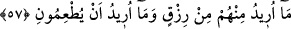

mükellefiyetler yüklememiştir. Bu durumda şöyle diyebiliriz: Terk husûsunda
(Rasûlullah’a) uymak, sünnet-i hasene ihdâs etmekten daha uygun ve daha ecirlidir. İşte
sen de hâlini sana bahsettiğim şekle getir.
İmam Ahmed b. Hanbel’in hiç karpuz yemediği, bunun sebebini soranlara;
Rasûlullah (s.a.)’in karpuzu nasıl yediğini bilmediği için bu işi terkettiğini söylediği
bildirilmiştir. İşte burada da gördğümüz gibi Rasûlullah (s.a.)’in karpuz yemesinin
şekliyle ilgili bir bilgi eline ulaşmadığı için karpuz yemeyi terketmiştir. İşte bunun gibi
ümmetimizin ulemasının diğer ulemanın önüne geçmesine sebep olan pek çok hâdise
vardır. Bakınız, bu İmam Ahmed “.. bana uyun ki, Allah da sizi sevsin...” (Âl-i İmran
3/31), “Andolsun Allah’ın Elçisi’nde sizin için Allah’a ve âhîret gününe
kavuşmaya inanan ve Allah’ı çok anan kimseler için, uyulacak en güzel bir örnek
vardır” (Ahzab 33/21) gibi âyetlerin mânâsını kavramış ve Allah Teâlâ’nın buyruğunu
yerine getirmiştir. Fiil, söz ve halden müteşekkil sünnetle amel etmek, onu bilip de
sayıp dökmekten daha faziletlidir. Öyleyse biz de ümmete gelmiş bu kadar emirler
varken, yeni sünnetler ihdâs ederek onların yüklerini niçin artıralım?
57. Ben onlardan rızık istemiyorum. Beni doyurmalarını da istemiyorum.
“Ben onlardan rızık istemiyorum.” İnsanlar ve cinlerden hiç bir zaman ne kendim, ne
kendileri, ne de başkaları için çalışmak sûretiyle kazanacakları bir rızkı istemiyorum.
“Beni doyurmalarını da,” kendilerini ve başkalarını beslemelerini de “istemiyorum.”
Burası, Allah Teâlâ’nın şânının kullarınkinden çok yüce olduğunu, onlar arasındaki
köle-efendi ilişkisine benzemediğini beyân etmek için getirilmiştir. Şöyle ki; insanlar,
maişet kazanmaları, yiyeceklerini hazırlayıp getirmeleri husûsunda kendilerinden
yardım görmek için köleleri ellerinde tutarlar. Bir kısım efendi rızka ulaşmada kölesinin
çalışmasına muhtaçtır. Bazıları da kölesinin kazanıp kendisine yiyecek getirmesine
ihtiyacı olmayacak derecede bol mala sâhiptir, ama yine de yemeğinin pişirilip
kendisine getirilmesi gibi ihtiyaçlarını ondan talep etme zorundadır. Ama Allah Teâlâ
bütün bunlardan, kölelerinin yâni kullarının kendisine ve başkasına fayda vermesinden
müstağnîdir. Çünki onların menfaatleri Allah’a değil yalnız kendilerine âiddir.
Dolayısıyla âyetin mânâsı şöyledir: “Ben onları benim ve kendilerinin rızkını elde
etmeleri için yönlendirmeyi murad etmiyorum. Ben ancak onlara rızıklarını ve
ihtiyaçlarını ihsân ediyorum. Onları, katımdan lütfettiğim rızıklarla yaşatıyorum. O
halde siz, yaratılma sebebiniz olan bana ibâdetle meşgul olunuz.”
Bu âyette kinâye yoluyla müşriklerin putları kasdedilmiştir. Çünkü müşrikler putlara
yiyecekler getirirlerdi. Ancak bu yiyecekleri çoğu zaman köpekler yer, sonra da putların
üzerlerine bevlederek oradan ayrılırlardı.